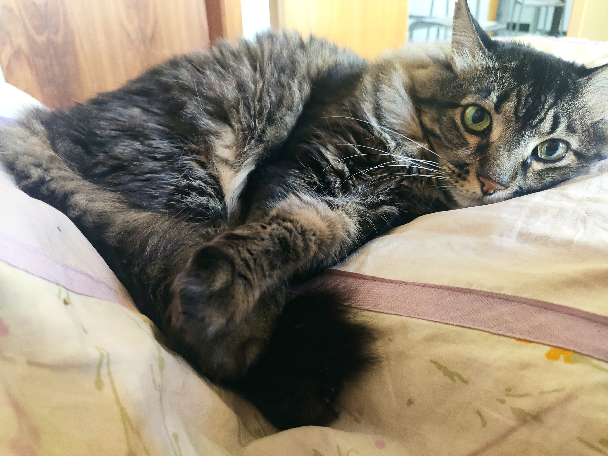
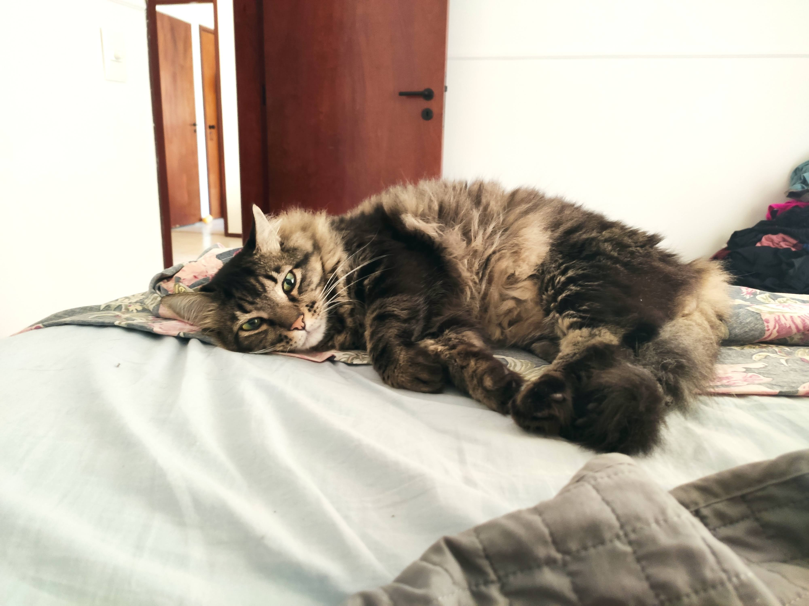

I prefer cats because they are sweet and independent. My cat sleeps 8 hours a day. When he is not sleeping, he is eating. Cats don't give you much problem or work. They don't depend on people near them all the time. And they don't need to walk outside because they use their sandbox. This point is fantastic because no one deserves to leave home during the wintertime. Cats are amazing.  